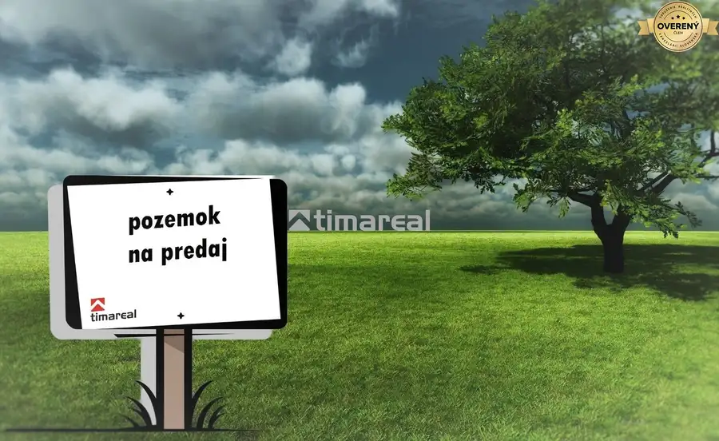
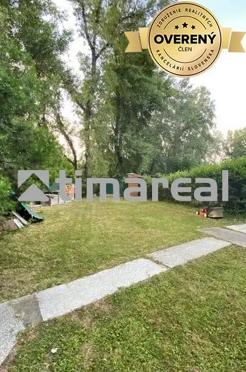

Super cena -Veľký dvojgeneračný dom 15 min od Trnavy
Horné Dubové
- Dispozícia6-izbový
- Plocha900 m²
- Poschodie0. z 2
- Vlastníctvoosobné
O nehnuteľnosti
Ponúkame na predaj cenovo výhodný veľký dvojgeneračný 6 izbový rodinný dom len 15 minút od Trnavy v obci Horné Dubové. Dom na nachádza na rovinatom pozemku o výmere 1100 , m², úžitková plocha je cca 355 m² , je z časti podpivničený, disponuje dvoma samostatnými vchodmi.
Dispozícia ponúka pohodlné plnohodnotné bývanie dvom generáciám. Na prízemí sa nachádzajú 2 izby, kuchyňa, komora, kúpeľňa, 2xWC, práčovňa a predsieň. Z presklenej terasy je vstup do pivnice, v ktorej sa nachádza sklad a kotolňa.
Na poschodí sa nachádzajú 4 izby, veľká kuchyňa s balkónom, kúpeľňa s WC a chodba. V izbách sú dva krby s prieduchmi.
Na priestrannom pozemku sa nachádza letná kuchyňa, garáž, hospodárke budovy, studňa a krásna záhrada so skleníkom. Na dvore je možné parkovanie viacerých áut. Dom disponuje kamerovým systémom, elektrickou bránou, 2 x krb s prieduchmi,
Dom je kúpou voľný.
Kľudná obec Horné Dubové sa nachádza na úpätí Malých Karpát, zo severovýchodu sa tiahne Považský Inovec, a z juhu Podunajská Pahorkatina. Poskytuje ideálne bývanie v príjemnom prostredí, pre tých, ktorí radi relaxujú v tichom prostredí a na záhradke, pričom nie sú ďaleko od mesta a a výjazdu na diaľnicu - len 15 min.
Neváhajte ma kontaktovať - obhliadky možné 7 dní v týždni - .
Odporúčame využitie balíka služieb ALL INCLUSIVE NAOPAK ktorý je poskytovaný bezplatne. Viac informácií o tejto službe na domovskej stránke prípadne osobne u ktoréhokoľvek z maklérov.
Naša spoločnosť pôsobí na trhu od roku 2004. Poskytujeme služby v oblasti sprostredkovania kúpy, predaja a prenájmu všetkých typov nehnuteľností. Ochotne Vám zabezpečíme dokumenty potrebné pre kataster nehnuteľností, servis pri vybavovaní hypotekárnych úverov, vypracovanie znaleckých posudkov a poistenie nehnuteľnosti prostredníctvom zmluvných partnerov. Naši makléri disponujú odbornými znalosťami, zodpovedným prístupom a preto sú zárukou serióznej, bezpečnej a rýchlej realizácie obchodu.
Parametre
| Rozloha pozemku | 900 m² |
|---|---|
| Poschodie | prízemie |
| Počet poschodí | 2 |
| Počet izieb | 6 |
| Vlastníctvo | osobné |
| Odvoz odpadu | áno |
| El. napätie | 230/400V |
| Plyn | áno |
| Kanalizácia | žumpa |
| Kúpeľňa | áno |
| Balkón | áno |
| Terasa | áno |
| Pivnica | áno |
| Garáž | áno - 1 auto |
| Parkovanie | vnútorné |
| Krb | áno |
| Okná | plastové |
| Terén | rovina |
| Prístupová cesta | asfaltová cesta |
| Dátum zverejnenia | 30. 4. 2026 |
Kde to je
Mohlo by Vás zaujímať

Pozemok 65 000 €Stavebný pozemok v Trstíne Trstín 421 m² Ponúkame na predaj krásny, slnečný stavebný pozemok s projektovou dokumentáciou na trojizbový rodinný dom pre stavebné povolenie v obci Trstín.…
Chaty a chalupy2 50 000 €Chata na veľkom pozemku Sereď Ponúkame na predaj chatu ns veľkou záhradou 600 m2. Na pozemku je vŕtaná studňa, v chate je zavedená elektrika, voda, splachovací záchod... Lokalita:…